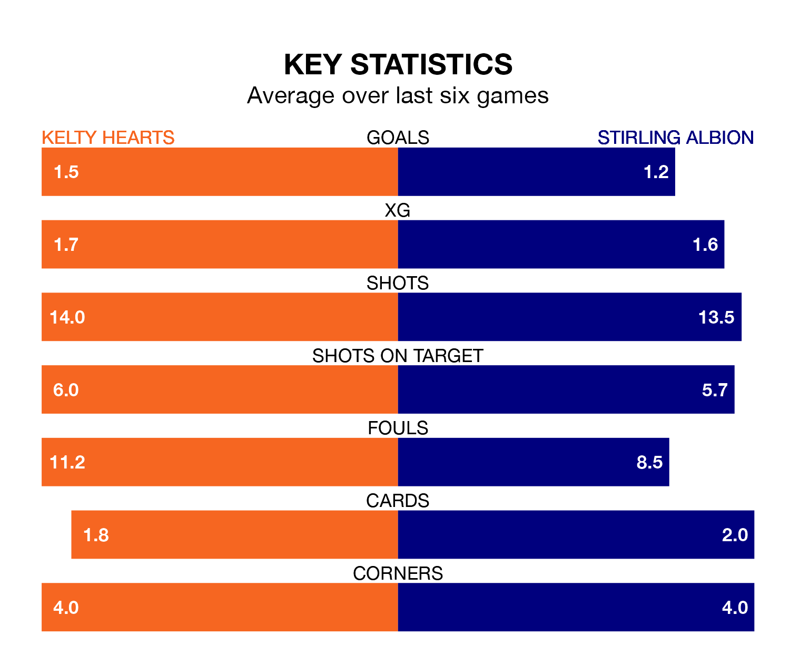

Stirling Albion come to New Central Park to play Kelty Hearts on Saturday in poor form, having collected just four points from their last six games.
The visitors have won one and drawn one of their last six fixtures, while Kelty Hearts have three wins and three losses.
In Blair Currie, Stirling can rely on one of the league's safest pair of hands. He has kept nine clean sheets in his 32 appearances this season, and no 'keeper has prevented the opposition scoring more often in League One.
In Kelty Hearts's net, Kyle Gourlay has four clean sheets in 32 games.
In the last 10 years, Kelty Hearts and Stirling have played each other on seven occasions. Kelty Hearts won three of them, Stirling two, and they drew twice.
On average, Kelty Hearts scored 1.3 goals and the Binos 1.3 in those matches.
Their last meeting was on January 27, when Stirling won 5-0 at home.
Albion are eighth in the table after 32 games, of which they have won nine and drawn seven, earning 34 points.
The home side are two places ahead of the Binos in sixth, with 11 wins and seven draws putting them on 40 points.
With 35 goals in 32 games so far this season, the visitors are the league's second-lowest scorers with 1.1 goals per game. And they are conceding more than average, letting in 55 goals at a rate of 1.7 per game.
Kelty Hearts are also below average scorers, with 1.4 goals per game, compared to a league average of 1.6. They have conceded 1.7 goals per game.
Kelty Hearts's last match was on April 6, a 2-1 win against Queen of the South, with Craig Johnston and Lewis Moore getting the goals for Kelty Hearts.
Stirling lost 5-1 against Alloa Athletic last time out, also on April 6, with Greig Spence on the scoresheet.
Updated: 11:20 (UTC), 09/04/24